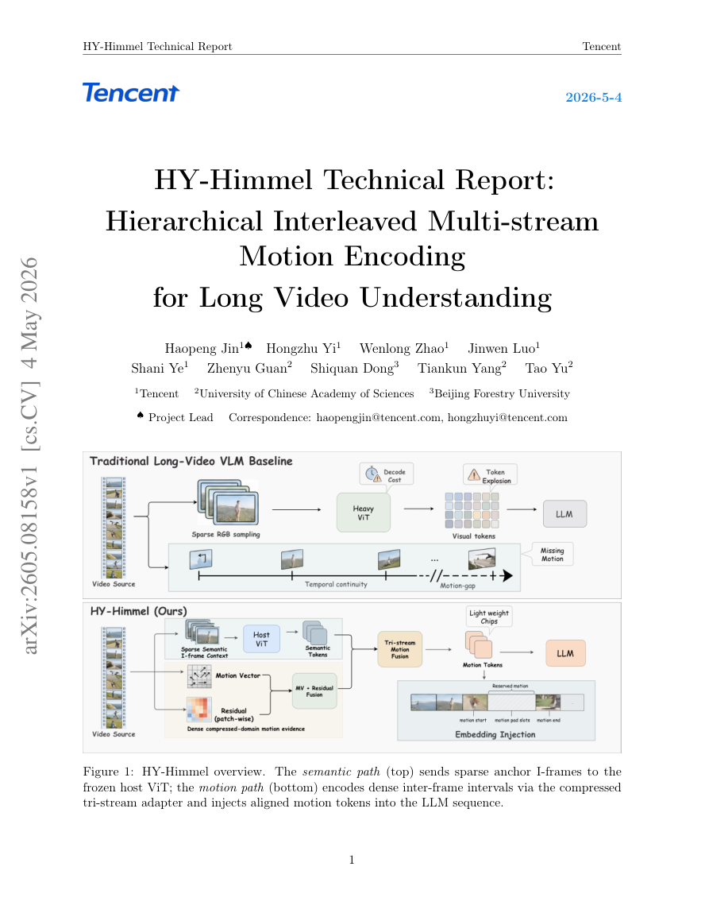

Long-video Understanding · Motion Encoding · VLA-inspired Reasoning
HY-Himmel / Dopamine 2.0
Hierarchical interleaved multi-stream motion encoding for long videos and step-aware reasoning.

Idea
Long videos are expensive to encode frame by frame, and many tasks require motion and temporal progress rather than static visual recognition. HY-Himmel uses compressed-domain signals and hierarchical memory to preserve motion cues efficiently.
I-frame Context
Motion Vectors
Residual Maps
Step-aware Memory
z_t = Fuse(I_t, MV_t, R_t, M_{t-1})
Each timestep fuses appearance, compressed-domain motion, residual change, and historical memory.
Representation
- I-frame context for appearance and scene semantics.
- Motion vectors for lightweight temporal displacement.
- Residual maps for changes not explained by motion compensation.
Reasoning View
- Step-aware memory for progress tracking.
- Interleaved streams to avoid losing fine-grained temporal evidence.
- Connection to VLA-style process understanding and task completion signals.